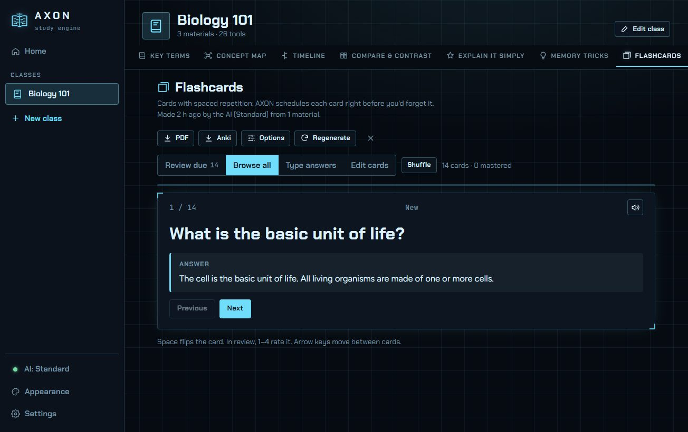
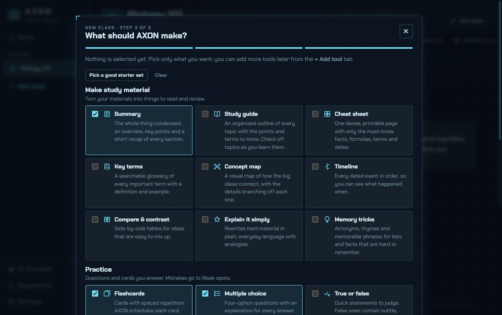
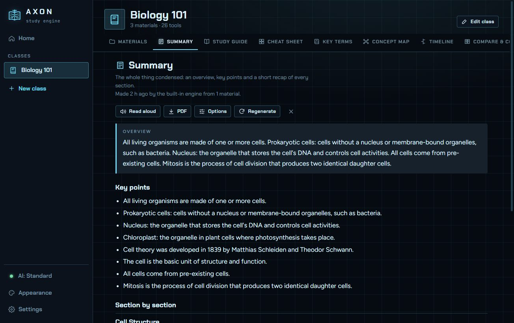

Your notes in.
Your best grade out.
Add the materials from any class: slides, PDFs, readings, photos of your notes. Then pick what you want: summaries, flashcards, practice tests, essay feedback and more. A private AI on your own PC builds it all.
Free · Windows 10 & 11 (64-bit) · Version 1.0.0 · 157 MB

Three steps. Then just study.
AXON never dumps everything on you. You choose exactly which study tools you want for each class, and you can add more any time.
Create a class
Name it, pick an icon and a color. Make one for every course you're taking.
Add your materials
Drop in PDFs, Word docs, PowerPoints, web pages, pasted text, or photos of handwritten notes.
Choose your tools
Tick what you want. Each becomes a tab. Decide later you want short-answer practice? Click + Add tool.
26 study tools, built from your own course
Everything is made from your materials, not the internet, so it matches what your teacher actually covers.
MAKE
- Summaries
- Study guide
- Cheat sheet
- Key terms glossary
- Concept map
- Timeline
- Compare & contrast
- Explain it simply
- Memory tricks
PRACTICE
- Flashcards with spaced repetition
- Multiple choice
- True or false
- Fill in the blank
- Matching
- Put in order
- Short response, AI-graded
- Essays with rubric feedback
- Passage analysis
EXAM PREP
- Timed practice exams
- Likely exam questions
- Weak spots review
- Explain it back
STUDY
- Ask your notes
- Study planner + calendar
- Focus timer
- Progress & streaks
- Read aloud
- Export to PDF & Anki
A real AI that lives on your PC
AXON downloads an open-source AI model once. After that it runs entirely on your computer, using your graphics card if you have one.
- Private by designYour notes, answers and grades stay on your PC. Nothing is uploaded.
- No accounts, keys or feesNo sign-up, no API key, no monthly bill, no usage limits.
- Works offlineStudy on a plane or in a dead zone. Internet is only needed to download the model.
- Fits your PCChoose Lite (1.8 GB), Standard (2.5 GB) or Pro (5 GB). No AI yet? A built-in engine still works.


Make it yours
Light or dark, or follow Windows. Pick a sharp HUD look or a clean one. Choose from twelve themes or design your own with any colors, then share it with friends as a code. Readable fonts include Lexend and a dyslexia-friendly option.
Click a theme to restyle this page. The app has these themes and more.
System requirements
AXON runs on most Windows PCs from the last several years.
Windows 10 or 11 (64-bit), 8 GB RAM, 4 GB free disk space. Uses the Lite model on the CPU.
16 GB RAM and any graphics card from NVIDIA, AMD or Intel. Runs the Standard model quickly.
A graphics card with 8 GB of memory (for example an RTX 3060/4060 or newer). Runs the Pro model.
Questions
Is it really free? What's the catch?
Yes. The AI runs on your own computer, so there are no server costs to pass on to you. No ads, no account, no data collection.
Windows says “Windows protected your PC”. Is it safe?
That warning appears for new apps that haven't built up a download reputation with Microsoft yet. Click “More info”, then “Run anyway”.
Which files can I add?
PDF (including scanned PDFs), Word (.docx), PowerPoint (.pptx), Excel (.xlsx), CSV, RTF, text, Markdown and HTML files, web pages (paste a link), pasted text, and photos or screenshots of notes. AXON reads the text from photos and scans for you, and marks it so you can check it.
How smart is the AI compared to ChatGPT?
It's a smaller model, so it's tuned for one job: building study material from what you give it. It only uses your materials, which keeps questions on topic and avoids made-up facts. Larger models give better results if your PC can run them.
Does it need the internet?
Only to download the AI model (once), to add web links, and the first time you add a photo (to download the text-recognition data). Everything else works offline.
How do I know the download is genuine?
Every release has a unique fingerprint (SHA-256). After downloading, open PowerShell in your Downloads folder and run Get-FileHash AXON-Setup-1.0.0.exe. The result must match exactly:
71FD82F5A1A67143D7C548A097F24AF6279111B9EF87F28E09CBEA021C46C9F5If it doesn't match, delete the file and download it again from this page only.
Can I move my classes to another computer?
Yes. Settings → Your data → Back up all classes creates one file. Restore it on the other PC.
Mac, iPhone or Android?
AXON is Windows-only for now.